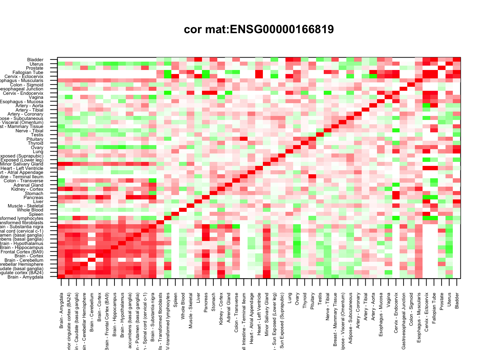
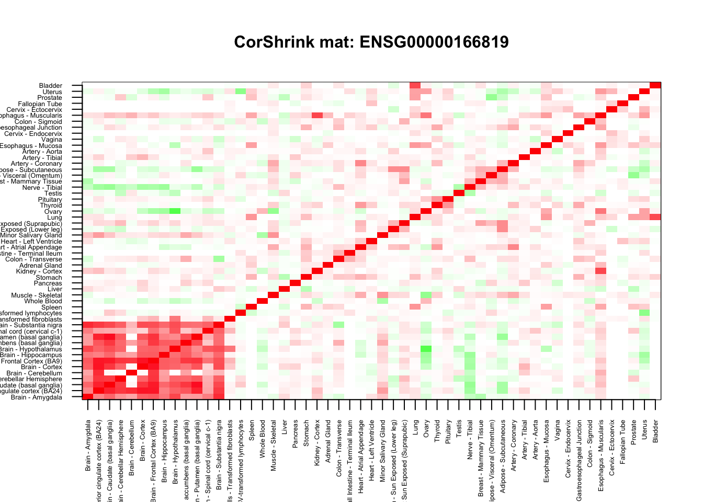
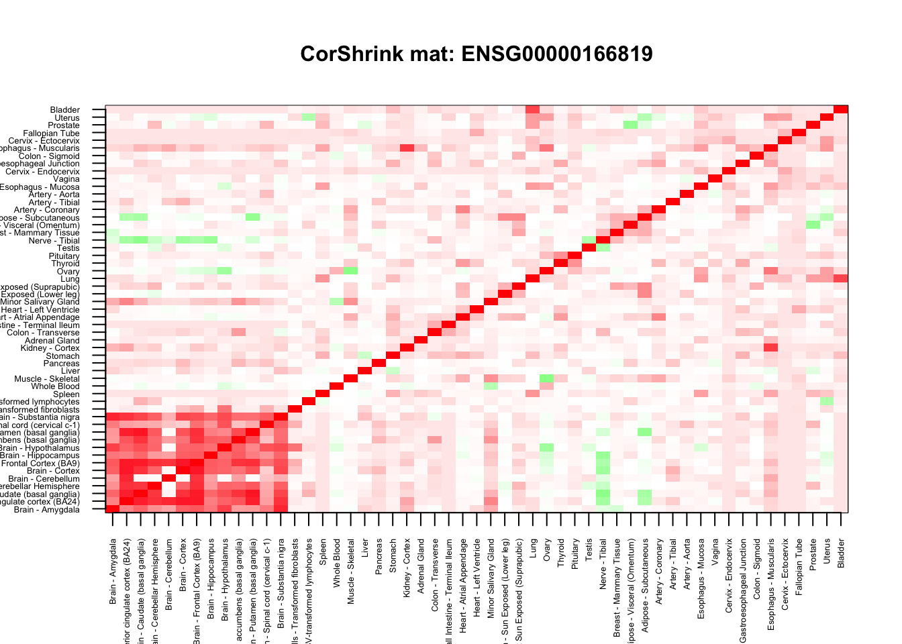

Last updated: 2017-11-19
Code version: e8badd8
This is the start of the GTEx analysis using CorShrink. Here we pick up one gene and use look at the Corshrink estimation of the tissue-tissue correlation for that single gene. This script can be used as a model script to check the Corshrink function as well when under development.
Name of the gene (see code chunk on the side) :
name <- "ENSG00000166819"Load the (tissue, tissue, gene) 3-D table of correlations between pairs of tissues for each gene in cor_data.
cor_data <- get(load("../output/cor_tissues_non_ash_voom_pearson.rda"))Load the metadata - names of genes, names of samples, labels for the person providing each sample, the tissue origin of the sample. We also form a list of the unique person labels and the tissue labels.
The tissue labels are organised so that tissues close to each other in terms of their origin or their clustering results are close together.
gene_names <- as.character(read.table(file = "../data/GTEX_V6/gene_names_GTEX_V6.txt")[,1])
gene_names_1 <- as.character(sapply(gene_names, function(x) return(strsplit(x, "[.]")[[1]][1])))
person_label=read.table("../data/GTEX_V6/person_identifier_labels_with_numbers.txt");
samples_id <- read.table(file = "../data/GTEX_V6/samples_id.txt")[,1]
samples_person <- sapply(samples_id, function(x) return(paste0(strsplit(as.character(x), "-")[[1]][1:2], collapse ="-")))
tissue_labels <- read.table(file = "../data/GTEX_V6/samples_id.txt")[,3]
unique_persons <- unique(samples_person)
unique_tissues <- unique(tissue_labels)
order_index <- c();
U <- unique_tissues
order_index <- c(order_index, grep("Brain", U))
order_index <- c(order_index, grep("fibroblast", U))
order_index <- c(order_index, grep("EBV", U))
order_index <- c(order_index, grep("Spleen", U))
order_index <- c(order_index, grep("Whole Blood", U))
order_index <- c(order_index, grep("Muscle - Skeletal", U))
order_index <- c(order_index, grep("Liver", U))
order_index <- c(order_index, grep("Pancreas", U))
order_index <- c(order_index, grep("Stomach", U))
order_index <- c(order_index, grep("Kidney - Cortex", U))
order_index <- c(order_index, grep("Adrenal Gland", U))
order_index <- c(order_index, grep("Colon - Transverse", U))
order_index <- c(order_index, grep("Small Intestine - Terminal Ileum", U))
order_index <- c(order_index, grep("Heart - Atrial Appendage", U))
order_index <- c(order_index, grep("Heart - Left Ventricle", U))
order_index <- c(order_index, grep("Minor Salivary Gland", U))
order_index <- c(order_index, grep("Skin - Sun Exposed", U))
order_index <- c(order_index, grep("Skin - Not Sun Exposed", U))
order_index <- c(order_index, grep("Lung", U))
order_index <- c(order_index, grep("Ovary", U))
order_index <- c(order_index, grep("Thyroid", U))
order_index <- c(order_index, grep("Pituitary", U))
order_index <- c(order_index, grep("Testis", U))
order_index <- c(order_index, grep("Nerve - Tibial", U))
order_index <- c(order_index, grep("Breast - Mammary Tissue", U))
order_index <- c(order_index, grep("Adipose - Visceral", U))
order_index <- c(order_index, grep("Adipose - Subcutaneous", U))
order_index <- c(order_index, grep("Artery - Coronary", U))
order_index <- c(order_index, grep("Artery - Tibial", U))
order_index <- c(order_index, grep("Artery - Aorta", U))
order_index <- c(order_index, grep("Esophagus - Mucosa", U))
order_index <- c(order_index, grep("Vagina", U))
order_index <- c(order_index, grep("Cervix - Endocervix", U))
order_index <- c(order_index, grep("Esophagus - Gastroesophageal Junction", U))
order_index <- c(order_index, grep("Colon - Sigmoid", U))
order_index <- c(order_index, grep("Esophagus - Muscularis", U))
order_index <- c(order_index, grep("Cervix - Ectocervix", U))
order_index <- c(order_index, grep("Fallopian", U))
order_index <- c(order_index, grep("Prostate", U))
order_index <- c(order_index, grep("Uterus", U))
order_index <- c(order_index, grep("Bladder", U))Now we apply CorShrink on this data.
numg <- grep(name, gene_names_1)
cor_mat <- diag(1,53)+cor_data[,,numg]
common_samples <- get(load("../output/common_samples.rda"))
system.time(cor_sample_ML <- CorShrink::CorShrinkML(cor_mat, common_samples, sd_boot = FALSE, ash.control = list(mixcompdist = "normal", nullweight = 10)))ash cor only and ash cor PD matrices are different user system elapsed
1.448 0.192 1.644 col=c(rev(rgb(seq(1,0,length=1000),1,seq(1,0,length=1000))),
rgb(1,seq(1,0,length=1000),seq(1,0,length=1000)))
image(as.matrix(cor_mat)[order_index, order_index],
col=col, main=paste0("cor mat:", name), cex.main=1,
xaxt = "n", yaxt = "n", zlim=c(-1,1))
axis(1, at = seq(0, 1, length.out = ncol(cor_mat)), labels = U[order_index], las=2, cex.axis = 0.4)
axis(2, at = seq(0, 1, length.out = ncol(cor_mat)), labels = U[order_index], las=2, cex.axis = 0.4)
col=c(rev(rgb(seq(1,0,length=1000),1,seq(1,0,length=1000))),
rgb(1,seq(1,0,length=1000),seq(1,0,length=1000)))
image(as.matrix(cor_sample_ML$ash_cor_only)[order_index, order_index],
col=col, main=paste0("CorShrink mat: ", name), cex.main=1,
xaxt = "n", yaxt = "n", zlim=c(-1,1))
axis(1, at = seq(0, 1, length.out = ncol(cor_mat)), labels = U[order_index], las=2, cex.axis = 0.4)
axis(2, at = seq(0, 1, length.out = ncol(cor_mat)), labels = U[order_index], las=2, cex.axis = 0.4)
numg <- grep(name, gene_names_1)
cor_mat <- diag(1,53)+cor_data[,,numg]
common_samples <- get(load("../output/common_samples.rda"))
system.time(cor_sample_ML <- CorShrink::CorShrinkML(cor_mat, common_samples, sd_boot = FALSE, ash.control = list(mixcompdist = "halfuniform",
nullweight = 100)))ash cor only and ash cor PD matrices are different user system elapsed
0.863 0.180 1.049 col=c(rev(rgb(seq(1,0,length=1000),1,seq(1,0,length=1000))),
rgb(1,seq(1,0,length=1000),seq(1,0,length=1000)))
image(as.matrix(cor_sample_ML$ash_cor_only)[order_index, order_index],
col=col, main=paste0("CorShrink mat: ", name), cex.main=1,
xaxt = "n", yaxt = "n", zlim=c(-1,1))
axis(1, at = seq(0, 1, length.out = ncol(cor_mat)), labels = U[order_index], las=2, cex.axis = 0.4)
axis(2, at = seq(0, 1, length.out = ncol(cor_mat)), labels = U[order_index], las=2, cex.axis = 0.4)
This R Markdown site was created with workflowr